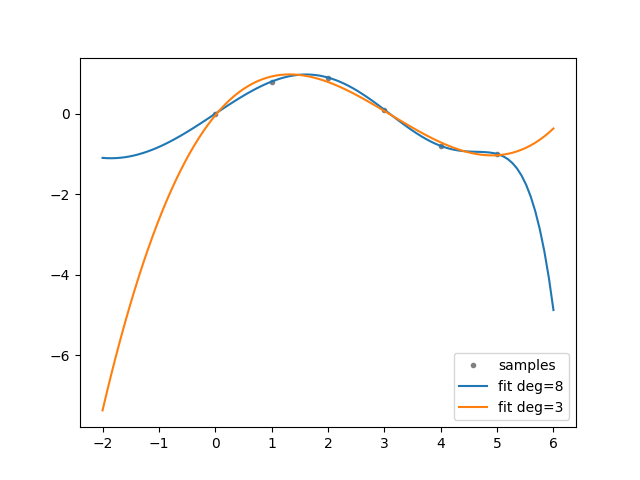
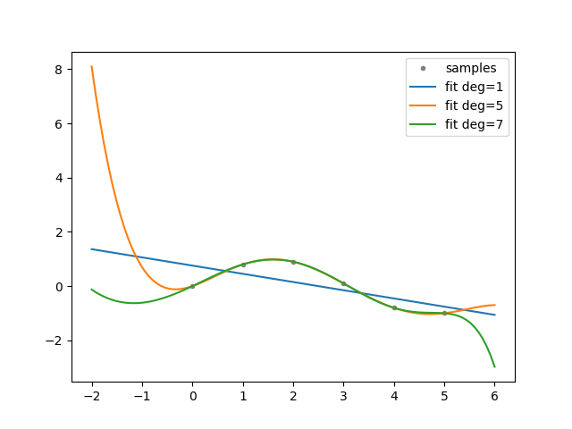

Note
Click here to download the full example code
Backup¶
Shows how to backup data.
import dman
from dman.numeric import carray, barray
from dman.plotting import PdfFigure
import numpy as np
import matplotlib.pyplot as plt
import warnings
@dman.modelclass(compact=True, storable=True)
class Config:
degrees: carray[int]
@dman.modelclass(storable=True, store_by_field=True)
class Experiment:
x: barray = dman.recordfield(subdir='samples')
y: barray = dman.recordfield(subdir='samples')
z: dman.mruns
fig: PdfFigure = None
def experiment(cfg: Config):
"""Generate experiment data.
Based on: https://numpy.org/doc/stable/reference/generated/numpy.polyfit.html.
"""
xp = np.linspace(-2, 6, 100)
x = np.array([0.0, 1.0, 2.0, 3.0, 4.0, 5.0])
y = np.array([0.0, 0.8, 0.9, 0.1, -0.8, -1.0])
z = dman.mruns(stem="poly", store_subdir=False, subdir='fit')
fig, ax = plt.subplots(1, 1)
ax.plot(x, y, ".", color="gray", label="samples")
for d in dman.tui.progress(cfg.degrees, description="order"):
with warnings.catch_warnings():
warnings.simplefilter("ignore", np.RankWarning)
zz = np.polyfit(x, y, d)
z.append(zz.view(barray))
p = np.poly1d(zz)
ax.plot(xp, p(xp), "-", label=f"fit deg={d}")
ax.legend()
return Experiment(x, y, z, PdfFigure(fig))
def evaluate(cfg: Config):
"""Evaluate the provided configuration.
Store a backup of the last executed experiment.
"""
current = dman.load('current', default=None)
if current is not None:
with dman.track("__backup__", default_factory=dman.mruns_factory(stem='backup')) as reg:
reg: dman.mruns = reg # for type hinting
reg.append(current)
current = experiment(cfg)
dman.clean('current') # clear old current
dman.save('current', current)
return current
# Clear the backed up runs if they exist (for a fresh start)
dman.clean('__backup__')
dman.clean('current')
# Execute several configurations
res1 = evaluate(Config([1, 5, 7]))
res2 = evaluate(Config([8, 3]))
res3 = evaluate(Config([1, 5, 7]))

- 
- 
order [3/3] ━━━━━━━━━━━━━━━━━━━━━━━━━━━━━━━━━━━━━━━━ 100% 0:00:00
order [2/2] ━━━━━━━━━━━━━━━━━━━━━━━━━━━━━━━━━━━━━━━━ 100% 0:00:00
order [3/3] ━━━━━━━━━━━━━━━━━━━━━━━━━━━━━━━━━━━━━━━━ 100% 0:00:00
We can examine the results and see that they are correct.
dman.tui.pprint(res1)
Experiment(
│ z=[barray([-0.30285714, 0.75714286]), barray([-8.33333333e-03, 1.25000000e-01, -5.75000000e-01,
│ │ 6.25000000e-01, 6.33333333e-01, 1.40925649e-14]), barray([-1.91046771e-04, 8.51553918e-04, 5.63990582e-03,
│ │ -3.21702635e-03, -1.74163595e-01, 9.60491579e-02,
│ │ 8.75031051e-01, -7.25194643e-16])],
│ fig=<dman.plotting.PdfFigure object at 0x7fe4a1d6eda0>
)
The file structure is then as follows. Note that a pdf has been created for each experiment containing the produced figures. Feel free to take a look.
dman.tui.walk_directory(dman.mount())
📂 .dman/cache/examples:patterns:example2_backup
┣━━ 📂 __backup__
┃ ┣━━ 📂 backup-0
┃ ┃ ┣━━ 📂 fit
┃ ┃ ┃ ┣━━ 📄 poly-0.npy (144 bytes)
┃ ┃ ┃ ┣━━ 📄 poly-1.npy (176 bytes)
┃ ┃ ┃ ┗━━ 📄 poly-2.npy (192 bytes)
┃ ┃ ┣━━ 📂 samples
┃ ┃ ┃ ┣━━ 📄 x.npy (176 bytes)
┃ ┃ ┃ ┗━━ 📄 y.npy (176 bytes)
┃ ┃ ┣━━ 📄 backup.json (1.5 kB)
┃ ┃ ┗━━ 📄 fig.pdf (14.3 kB)
┃ ┣━━ 📂 backup-1
┃ ┃ ┣━━ 📂 fit
┃ ┃ ┃ ┣━━ 📄 poly-0.npy (200 bytes)
┃ ┃ ┃ ┗━━ 📄 poly-1.npy (160 bytes)
┃ ┃ ┣━━ 📂 samples
┃ ┃ ┃ ┣━━ 📄 x.npy (176 bytes)
┃ ┃ ┃ ┗━━ 📄 y.npy (176 bytes)
┃ ┃ ┣━━ 📄 backup.json (1.3 kB)
┃ ┃ ┗━━ 📄 fig.pdf (13.3 kB)
┃ ┗━━ 📄 __backup__.json (597 bytes)
┗━━ 📂 current
┣━━ 📂 fit
┃ ┣━━ 📄 poly-0.npy (144 bytes)
┃ ┣━━ 📄 poly-1.npy (176 bytes)
┃ ┗━━ 📄 poly-2.npy (192 bytes)
┣━━ 📂 samples
┃ ┣━━ 📄 x.npy (176 bytes)
┃ ┗━━ 📄 y.npy (176 bytes)
┣━━ 📄 current.json (1.8 kB)
┗━━ 📄 fig.pdf (14.3 kB)
Total running time of the script: ( 0 minutes 0.642 seconds)